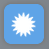
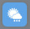
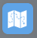
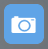

Features
This application is a one-page display, with additional features in expandable windows. The main page consists of:
- tabs for each of your saved weather locations
- detailed current conditions
- a weather window or weather camera image to show the outside conditions at a glance
- 3-day forecast
All information displayed is for the active (highlighted) location tab. You may view additional information by opening the following windows:
|  | Observations: : Clicking on the sun icon opens the observations window. This displays both current observations and conditions "so far today". |
|---|---|
|  | Forecasts: : Clicking on the umbrella icon or any of the 3-day forecasts opens the forecast window. You may view the 7-Day Summary, 7-Day Detail or Hourly Forecasts*. |
|  | Weather Map: Clicking on the globe icon opens the weather map. |
|  | Weather Cameras: Clicking on the camera icon displays pictures from weather stations within a 100-mile radius of your location*. |
Only one window may be opened at a time. To close a window, click the close button in the upper right-hand corner.
*Hourly Forecasts and Weather Camera images may not be available for all locations.
Weather Alerts
Alerts are currently available for the United States, Canada, United Kingdom and Spain.
The alert icon will only appear if an alert is active. The number within the icon displays the number of active alerts. The icon appears in the following places:
- to the left of the locations name in the saved locations tabs (displays for all locations that have active alerts)
- over the cloud cover image in the detailed current conditions (only displays for the current location being viewed)
Click on the icon over the cloud cover image to open a window containing the alert details. The icon in the location tab is non-clickable.
Display Units
Weather data may be displayed in either English or Metric units. Clicking on the cog in the upper right-hand corner of the window allows you to change the display.
Window Image Display
By default, the window in the center of the application displays a weather video that closely matches the current outside conditions for your location. You may choose to display a camera image from the closest weather station within a 100-mile radius of your location instead by following these steps:
- Click on the Settings cog in the upper right-hand corner of the window.
- Check the camera image option under Window Options.
- Click Save. The Settings window will close and the camera image will be displayed.
Locations
You are able to view weather for many locations. There is a set of tabs at the top of the page that display each saved location, along with basic weather details and active alerts. You may add new locations, reorder, delete and view detailed weather information by using the tabs.
-
Add
Any time a new location is added, it is automatically saved and displayed in your location tabs. You must add a location in order to view the weather data (you may add up to 10 locations). To add a new location:
- Click on the Add Location button to the right of the location tabs at the top of the window.
-
You may either search for a location or geolocate:
- To search: Enter the U.S. zip code, city name or address and click the Search button.
- To geolocate: Click the Geolocate button.
- The closest match will be returned in a Select field.
- Click Select to add the location.
- Click on the arrow to the right of the field to expand the list of locations to select a different location if multiple locations were returned.
- Click Cancel if you don't want to add the location.
-
Reorder
The location at the far left of the list is your default display every time you open the application. To reorder your locations:
- Click and drag on the location tab you wish to move.
- Release the mouse button once the tab is in the desired position.
-
Delete Location
To delete a location:
- Click on the delete control to the right of the location name.
- A confirmation window will open.
- Click the Delete button.
-
Switch Locations/View Weather Details
To switch locations:
- Click on the tab for the location you wish to view (make active).
- The information in the main display will reset for the selected location.
Map Actions
You are able to pan, zoom in, zoom out and animate the map. The standard Google map navigation controls are displayed at the top, left-hand corner of the map.
- The zoom buttons (+/-) allow you to zoom in or out.
You may also use your mouse scroll wheel to zoom in or out.
An animation bar is displayed at the bottom, right-hand corner of the map for layers that allow animation (currently Satellite and Doppler Radar).
| Allows you to start animation. (If the map is animating, this will change to a stop button.) | |
| Allows you to advance forward, frame by frame. | |
| Allows you to jump to the last animation frame. | |

|
Allows you to move backwards, frame by frame. |
| Allows you to jump to the first animation frame. |
Map Layers
You can customize your maps by selecting from three different types of views:
-
WeatherBug Weather Layers
- Temperature: Displays a color-coded contour layer of the current temperature.
- Pressure: Displays a color-coded contour layer of the current pressure.
- Humidity: Displays a color-contour contour layer of the current humidity.
- Wind Speed: Displays a color-coded contour layer of current wind speeds.
- Radar (U.S.): Displays a radar image only for locations in the Continental United States.
- o Infrared Satellite and Global Infrared Satellite: Cloud cover is shown by detection of water vapor/droplet temperatures.
- Visible Satellite: Cloud cover is shown by reflected sunlight off the cloud tops. This layer only displays cloud cover in the daytime.
By default, the Doppler Radar layer will show for U.S. locations and the Infrared Satellite layer will show for international locations. You may only view one weather layer at a time.
-
Google Base Map Options
- Map: Displays a basic street map. The further you zoom in, the more details display.
- Satellite: Displays high-resolution satellite images.
- Terrain: Displays basic topographic features.
A legend, which displays at the bottom of the map, provides a value key for each color in all color-coded weather layers.
Social Networking
We allow you to either Share the weather on your Twitter and Facebook pages. This will add a link our webpage if there is any weather news you wish to share. For you Facebook members, clicking the Facebook Like button will show your appreciation and we strongly hope that you will like us!